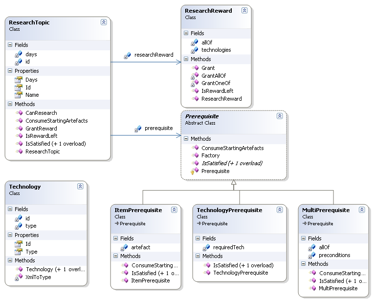
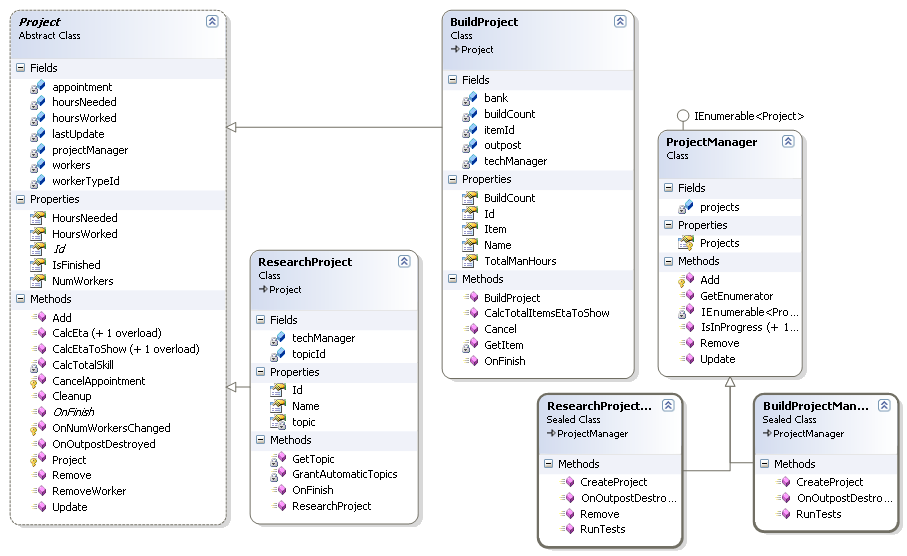

Research
The research tree comprises the set of "topics" that can be researched.
Each topic is made of:
- Prerequisites - conditions that must be satisfied before the project can start
- Cost (Person days) of research required
- Grants - what player gets for researching the topic
The basic types of prerequisite conditions are:
- Having completed a specific research topic.
- Having access to a specific a X-Net entry. (That is not necessarily true as every topic has a reference in the XNET, you can think of it as a root with automatic unlocking and the rest depends on the attached grant ).
- Having a specific type of artefact in a base's store. (Dead aliens are artefacts too).
- Having a specific type of captured alien (species and rank) in a base.
- Having ability to build a specific base facility.
Additional notes
- Also, the prerequisite conditions for a project may be satisfied by a combination of "basic prerequisites." For example, having any one of a set of requirements. (e.g. Leader integration can be satisfied by having one of several species of leader.) Or requiring all requirements of the set. (E.g. Alien goal) Or a combination of the above.
- Also, some topics are automatically granted at the start of the game. This gives player access to the starting technologies.
- Some topics don't need to be researched, they're automatically granted when all prerequisites have been satisfied. (E.g. The GAIA X-CAP becomes available as soon as the Eclipse and Gaia missiles have been researched.) This is indicated in the XML file with a time of 0. This is a special corner case that can be handled directly by a grant.
- If a project has an item as a prerequisite, one instance of the item is consumed by the project.
- If a project has a combatant as a prerequisite, the combatant is "consumed" by the project.
Types of grants:
- A new research project.
- Add an entry to X-Net.
- Unlock ability to build and use an item.
- Unlock ability to build a base facility
Additional notes
- A project may have a set of things it can "grant". It will grant either all items in the set or only one randomly chosen item from the set.
- If a project can grant "Any one of" the grants in a set, then the project can be researched multiple times, with each time giving a different grant, until all topics have been unlocked.
Additionally, we need sanity checks against the research tree. Especially, as users are supposed to be able to alter the tree. Tests we must do are:
- Making sure that every item (in items.xml) can be granted by one or more research projects.
- Making sure that every X-Net entry can be granted by one or more research projects.
- Making sure that there are no research topics that are inaccessible. (E.g. a topic depends on another topic that isn't in the tree, or a there's a loop in the prerequisites. E.g. Topic "A" has Topic "B" as a prereq, but "B" has "A" as a prereq, or even deeper trees)
The classes making up research are:

Technology represents a technology that X-Corp can have access to. It's really nothing more than an identifier for a technology.
ResearchTopic represents something that X-Corp can study. Note, tracking the actual studying of a topic is not done by a ResearchTopic itself.
That's done by a ResearchProject. (More on that later) The main properties of a topic are:
- The prerequisites that must be satisfied before a topic can be researched.
- The reward that will be granted once a topic has been researched.
- The time required to research a project.
ResearchReward represents the reward X-Corp will receive if a topic is researched. Essentially it's a list of technologies and a boolean flag indicating if all technologies in the list will be granted, or just one.
If just one, then the topic can be researched multiple times until all technologies have been received.
Prerequisite is an abstract class, representing a requirement that must be satisfied for a topic to be researched:
- ItemPrerequisite is a single artefact that must be in X-Corp's possession before. Note that an alien prisoner is just another type of artefact.
- TechnologyPrerequisite is a single technology that must be available to X-Corp.
- MultiPrerequisite is a set of prerequisite conditions that must be satisfied.
The boolean "allOf" is used to indicate if all of the prerequisites in the set must be satisfied for the MultiPrerequisite to be satisfied, or if just satisfying one will be sufficient.
Note that it's possible to nest multiprerequisites. That is, a Multiprerequisite can contain other multiprerequisites in its set of prerequisites.
The classes involed in project management are:

Project Base class for a Research or Manufacturing project. It's responsible for tracking the people assigned to the project, and the project's progress towards completion
Major points of note are the presence of an appointment, and an update() function. The appointment goes into the scheduler to signal when the project should be finished.
However, it's possible for the player to alter the number of workers assigned to a project. When this happens, update() is called to update the projects progress up to that point
so that the new end appointment can be set using the new set of workers.
ResearchProject obviously, researching a Research Topic.
BuildProject Manufacturing items in a base.
ProjectManager Really, this is nothing more than a collection of projects.
ResearchProjectManager A collection of ResearchProjects. In reality, X-Corp owns the single instance of this class, which is a list of the Topics X-Corp is currently researching.
BuildProjectManager A collection of BuildProjects. Each X-Corp Outpost owns an instance of this class, which is a list of the items (NOT facilities) being constructed in the outpost.